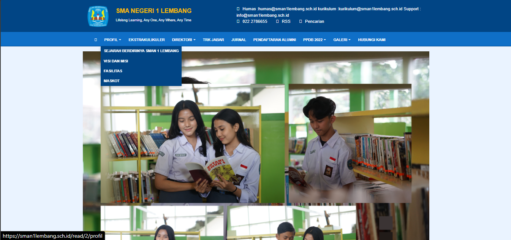
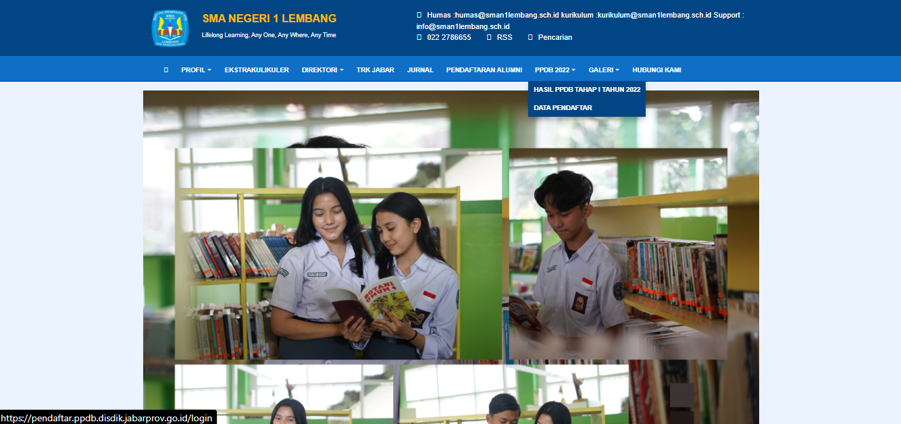
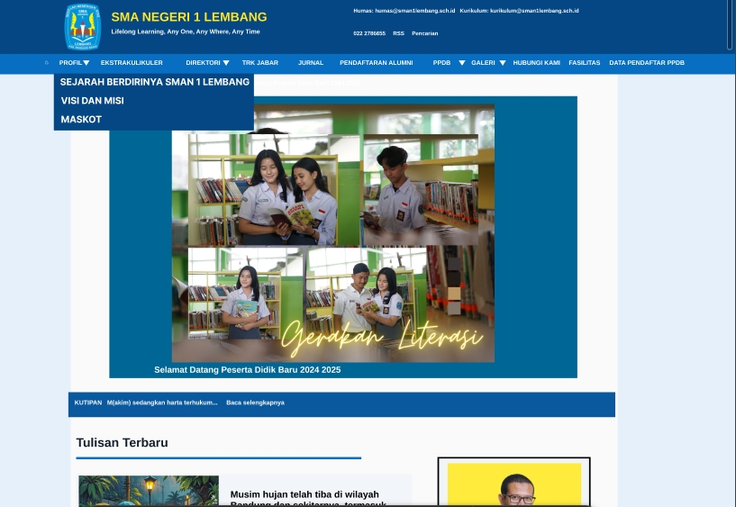
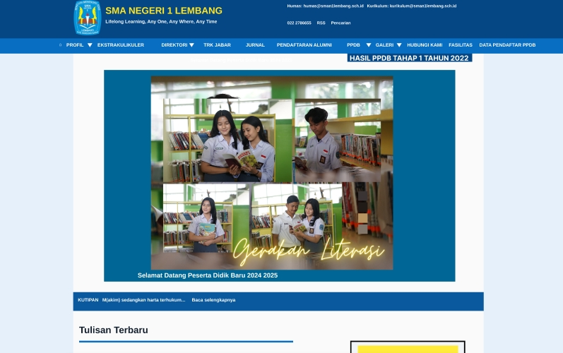

Sejarah Berdirinya Sekolah
INFORMASI SEKOLAHInformasi sejarah cukup mudah ditemukan, tetapi navigasinya masih dapat dibuat lebih jelas.
5,6CASE STUDY UX REVIEW / WEBSITE SEKOLAH
Sebuah tinjauan terhadap cara pengguna menemukan informasi penting di website sekolah, dari sejarah dan fasilitas hingga PPDB dan direktori.
Jelajahi temuanSepuluh tugas pencarian meninjau seberapa mudah informasi sekolah ditemukan dan dipahami.
Ringkasan menunjukkan bahwa sebagian besar informasi dapat ditemukan. Namun, beberapa bagian masih membutuhkan navigasi yang lebih tegas, lokasi yang lebih terlihat, dan struktur penyajian yang lebih konsisten.
Fokus evaluasi mencakup informasi sekolah, PPDB, direktori, serta galeri foto, video, dan kegiatan.
Pengguna perlu berpindah dari menu ke halaman yang tepat untuk menemukan informasi tertentu. Pada materi evaluasi, informasi PPDB, data pendaftar, hasil seleksi, dan direktori termasuk bagian yang jalur akses atau penamaannya masih dapat diperjelas.
Tantangannya bukan sekadar menambah informasi, tetapi membuat letak, nama, dan susunannya mudah dipahami sejak awal.
Skor dan ringkasan berikut mengikuti materi yang diberikan.
Informasi sejarah cukup mudah ditemukan, tetapi navigasinya masih dapat dibuat lebih jelas.
5,6Informasi visi dan misi sangat mudah ditemukan dan penyajiannya jelas.
6,4Informasi maskot cukup mudah ditemukan, namun letak informasinya masih dapat diperjelas.
5,8Fasilitas dapat ditemukan, tetapi struktur penyajiannya masih dapat ditingkatkan.
5,6Informasi cukup mudah ditemukan melalui menu PPDB, tetapi aksesnya masih dapat dipersingkat.
5,8Data cukup mudah ditemukan, namun navigasi menuju informasi tersebut perlu diperjelas.
5,6Hasil mudah ditemukan, tetapi lokasi informasinya masih dapat dibuat lebih terlihat.
5,6Informasi cukup mudah ditemukan, namun akses dan penamaan menu dapat diperjelas.
5,6Informasi cukup mudah ditemukan, tetapi penyajian dan navigasinya masih dapat diperbaiki.
5,6Galeri dinilai sangat jelas dan sangat mudah ditemukan.
6,4Skala penilaian tidak dicantumkan pada materi sumber; skor ditampilkan apa adanya dan tidak dinormalisasi.
Prioritas dirangkum dari rekomendasi pada materi evaluasi.
Buat navigasi menuju data pendaftar lebih jelas agar informasi dapat ditemukan dengan lebih cepat.
AKSES INFORMASIPertahankan menu yang konsisten agar pengguna baru tidak perlu membuka terlalu banyak halaman.
INFORMATION ARCHITECTUREGunakan judul, submenu, dan kategori yang mudah dikenali untuk PPDB, sejarah, visi dan misi, fasilitas, serta direktori.
HIERARKI KONTENLetakkan informasi yang sering dicari di bagian halaman atau menu yang mudah dikenali pengguna.
VISIBILITASBandingkan kondisi awal dan hasil perbaikan pada navigasi Profil dan PPDB.




Temuan ini menunjukkan area perbaikan yang spesifik: pendekkan jalur menuju informasi PPDB, gunakan navigasi yang konsisten, dan buat isi penting lebih terlihat.
Catatan: materi sumber tidak mencantumkan nama sekolah, skala skor, atau metode pengambilan nilai. Studi kasus ini hanya merangkum temuan dan rekomendasi yang terlihat.
Kembali ke daftar project